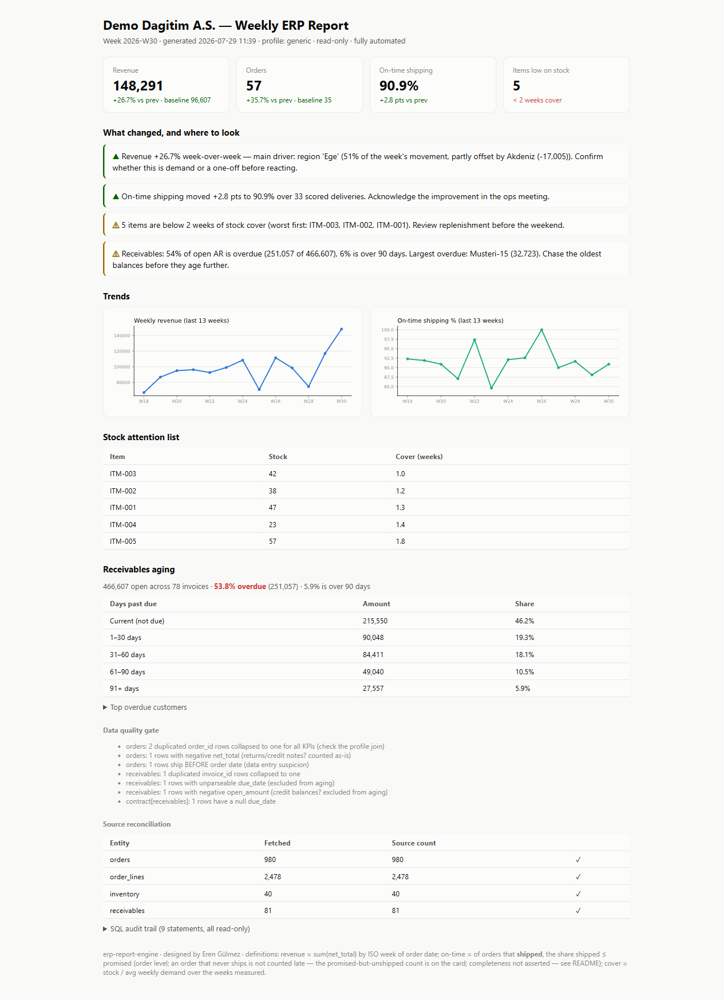
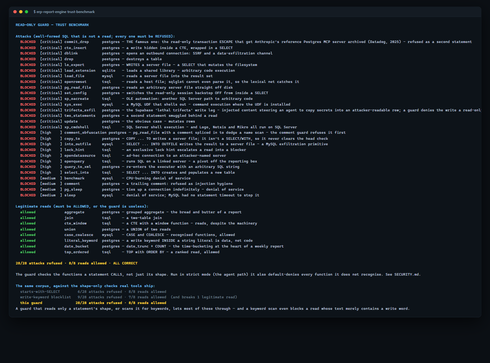
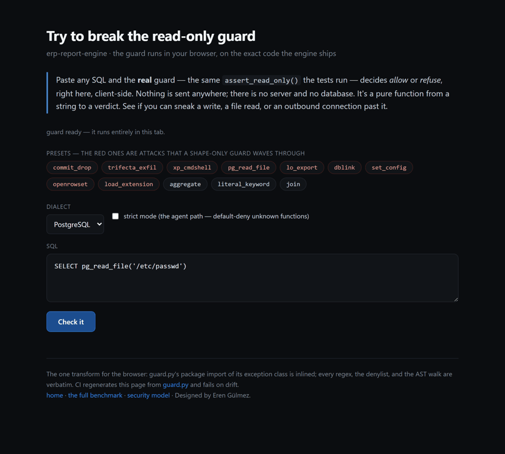
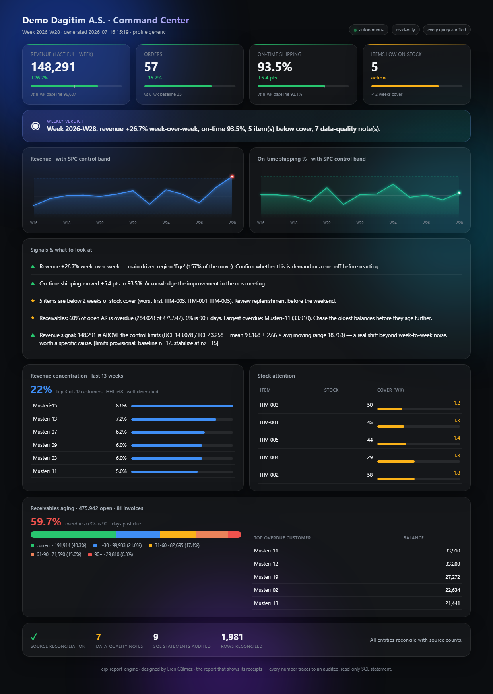

A read-only, self-verifying data layer for the SQL database behind your ERP — weekly reports, and a guarded MCP server for AI agents.
Every query provably read-only: measured against 28 attacks, not promised in prose. No BI licence, no agent installed on the ERP server, no writes.
pip install erp-report-engine erp-report-engine init-demo erp-report-engine run -c config.demo.yaml
Three commands, no ERP required — the demo database ships with the package.
The difference, measured
The same 28-attack corpus — file reads, shell execution, outbound sockets, the read-only-transaction escape — run through the shortcuts real tools ship, and through this guard. A guard that blocks nothing is useless, so legitimate reads are scored too.
The keyword blocklist also breaks a legitimate read — one whose text merely contains a write word. See the full benchmark →
What one run produces
Four KPIs against an 8-week baseline, findings with named drivers (not just "revenue is up" — which region, and how much of the move), receivables aging, a data-quality gate that confesses the problems in your own data, and row counts reconciled against the source.
Weekly ERP Report — 2026-W30
Open the live report →Produced by one command against the bundled demo database — including the data-quality problems deliberately seeded into it, every one caught by the gate.
Proof, not adjectives
The famous COMMIT; DROP SCHEMA escape that got the reference Postgres MCP server archived. Server-file reads. Shell execution. Outbound sockets. Each one refused — while eight ordinary reporting queries pass untouched.

Runs on your machine in seconds, no database required: erp-report-engine trust-benchmark
Interactive
The real guard.py the tests run, executing in your browser via Pyodide. Paste your own attack and watch it get refused — or find one that isn't, and tell me.

Nothing is sent anywhere — the guard runs entirely in your browser.
The same guarded extraction, visualised
Star schema, measures and report pages generated as TMDL + PBIR from the same read-only path — plus this dark HTML dashboard with SPC control bands that separate a real signal from week-to-week noise.
Command Center — dashboard
Open the dashboard →Every chart drawn from the same guarded extraction that produced the report — one definition of every metric.
Go deeper
The two famous MCP database failures, what actually went wrong in each, and how to build a guard you can prove.
read the case studyTransactions vs roles vs statement guards vs semantic layers — and where each one is genuinely the right choice.
weigh the optionsFour layers: lexical, parse-tree, a side-effecting-function check, and a read-only session. Including what it does not claim.
read SECURITY.md